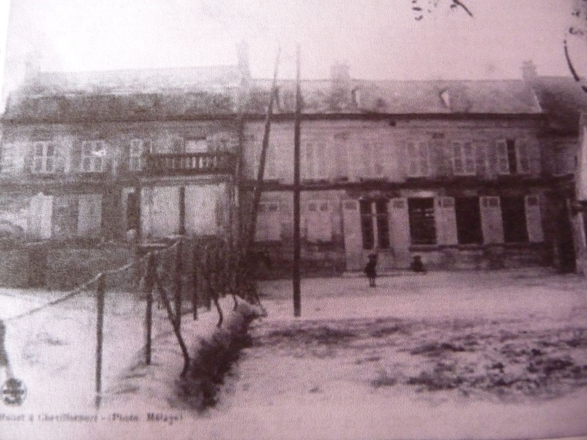
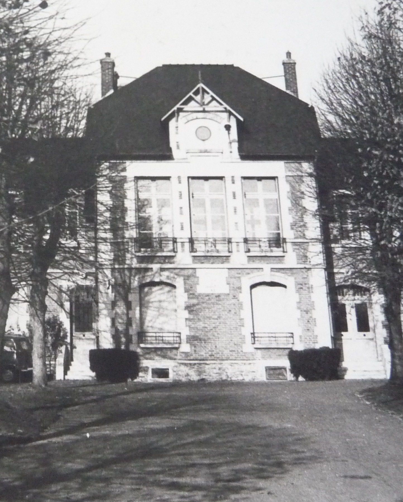
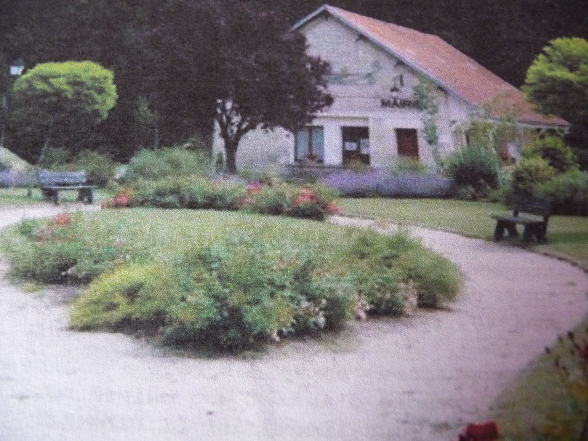

Le changement de localisation de la mairie intervenu en 1983 ne fut pas le premier à Autrêches car les endroits où se tinrent les assemblées municipales varièrent au fil du temps.
a/ Avant la Révolution
Les affaires communales se traitaient alors dans des assemblées composées des habitants de la paroisse. Elles se tenaient à l’issue de la messe ou des vêpres devant la porte de l’église (ou dans l’église en cas de mauvais temps). Le Syndic, tout comme le Maire aujourd’hui, convoquait l’assemblée et la présidait. Par contre il n’avait pas qualité de magistrat et ne pouvait prendre d’arrêté. Chaque habitant avait la possibilité de prendre part aux débats comme aux votes (aujourd’hui ces prérogatives sont réservées aux seuls conseillers, mais tout un chacun peut assister aux séances du Conseil Municipal).
b/ De la Révolution à 1914
Un édit royal de juin 1787 mit fin à ce système et créa une représentation communale préfigurant l’organisation actuelle. En dehors du Seigneur et du Curé –membre de droit- tous les autres membres étaient élus par les seuls habitants payant au moins dix livres d’impôt.
Les premières élections municipales d’Autrêches eurent lieu l’année suivante en 1788 : on pense que le précédent Syndic, Pierre QUEQUET , cultivateur du Tiolet, fut choisi (les fermiers du Tiolet étaient des notables ; certains furent inhumés à l’intérieur de l’église).
Ce Pierre QUEQUET peut donc être considéré comme le premier Maire élu d’Autrêches : il exerça au total 14 ans les fonctions de Syndic et mourut le 19 mars 1791 à 76 ans et 7 mois précise le registre.
L’édifice reproduit ci-après était la mairie-école d’Autrêches jusqu’en 1914. Construit dans les années 1860, cet édifice se trouvait place de l’Eglise et était contigu à l’ancien café : il comprenait outre la salle de classe, la salle de mairie, le logement du maître d’école ; un escalier reliait le rez-de-chaussée au 1er étage ;

c/ La vie dans les ruines (1918-1928)
La Grande Guerre a à ce point éprouvé Autrêches qu’il n’est resté pierre sur pierre de la mairie. Aujourd’hui le sol goudronné et les arceaux ne laissent pas soupçonner qu’à cet endroit vide se trouvait le centre de la vie communale.
Une mairie provisoire fut édifiée en 1918 dans des baraquements, non pas à Autrêches, mais à Chevillecourt sur l’emplacement des préaux de l’actuelle école.
d/ De la reconstruction de la Mairie à sa désaffection (1928-1983)
Ce baraquement servit de mairie pendant 10 ans. Le projet de reconstruction buta sur le choix d’un emplacement et divisa profondément les esprits. Les projets se succédèrent.
On pensa tout d’abord à reconstruire la mairie sur le terrain en contrebas de l’église, se trouve bordé par les rues Train et de la Horse, sur lequel était édifié avant la guerre la maison Le Pierre* . Il avait cependant contre lui d’être trop accidenté et en terrasse, sans parler de l’opposition des habitants de Chevillecourt.
En 1922, pour tenter de faire plaisir à tout le monde (en n’arrangeant personne) on envisagea un lieu qui serait équidistant d’Autrêches, Chevillecourt et Hautebraye, en plein champs, au lieu dit « La Folie ». L’inconvénient de cette Folie était que le terrain était littéralement bouleversé ; les sondages aboutirent au rejet du projet
Un an plus tard, la reconstruction sur l’emplacement d’avant guerre fut envisagé ; l’opposition catégorique des habitants de Chevillecourt fit avorter le projet.
En dépit de l’opposition farouche des habitants d’Autrêches, le projet définitif à Chevillecourt fut adopté en 1926 par la majorité du Conseil.
*Terrain récemment aplani et engazonné par la municipalité.
Le terrain retenu était un terrain de culture ( pas de travaux de déblaiement donc) ; l’absence de dénivellation permettait une économie de 60.000 Francs sur un devis de 367.308 Francs.
Le financement fut assuré par des dommages de guerre. L’entreprise REBAIS de Compiègne emporta le marché ; les matériaux vinrent de Pont l’Evêque pour la brique, de Vassens pour la pierre ; les travaux commencèrent en octobre 1927 pour se terminer en juillet 1928 et furent l’œuvre d’une quinzaine d’ouvriers originaires d’Autrêches pour la plupart.
L’inauguration eut lieu le 11 novembre 1928 par le Maire de l’époque Monsieur NOCQ, en présence des autorités locales dont le préfet de l’Oise et l’Inspecteur d’Académie.

e/ L'actuelle mairie
La commune ne disposait plus de salle de mairie depuis que celle-ci avait été utilisée en salle de classe compte tenu de l'extension du groupe scolaire. De ce fait, la commune manquait cruellement de locaux pour accueillir les réunions publiques et associatives. Aussi en décembre 1977, le Conseil municipal pris la décision de construire deux nouvelles classes et un logement. Une des classes à construire étant destinée à libérer la salle de mairie.
Une opportunité va se présenter alors avec la vente par la société exploitant les carrières de Vassens de leurs installations en face de la mairie-école. La commune n'hésite pas longtemps et achète cette propriété en 1982.
Elle aménage alors un des deux bâtiment pour en faire sa nouvelle mairie tandis qu'elle transforme le bâtiment principal en salle multifonction tandis que les bureaux attenants sont transformés en deux petits logements.
Le tout est solennellement inauguré le 5 mai 1984 en présence du président du Conseil général, du s/préfet de Compiègne, de nombreux officiels et bien sur de la population ravie de pouvoir disposer de locaux fonctionnels.
Ainsi, après 58 ans de bons et loyaux services, la mairie édifiée en 1928 a t-elle à la satisfaction générale traversé la rue pour s'installer dans des locaux bien aménagés.
